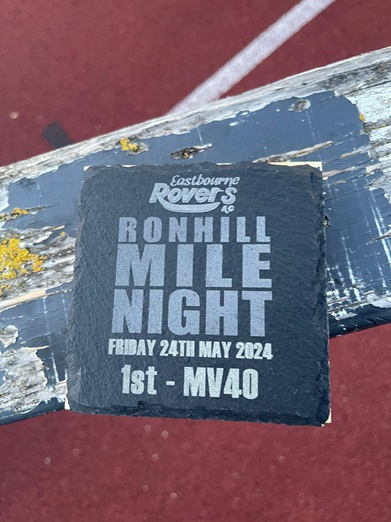
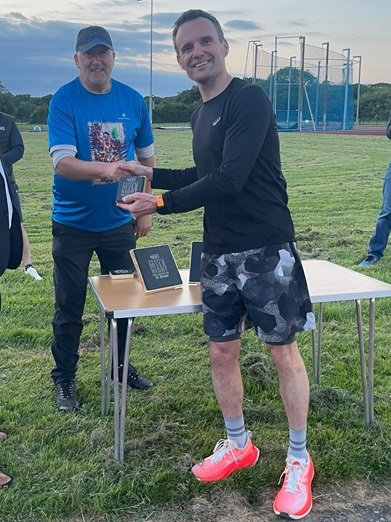

Jamie Philip was first V40 at the Eastbourne Ron Hill Mile Night on 24th May in 4.48, 13 seconds off the previous V45 club best. The full results are here.

24 May 2024

Jamie Philip was first V40 at the Eastbourne Ron Hill Mile Night on 24th May in 4.48, 13 seconds off the previous V45 club best. The full results are here.